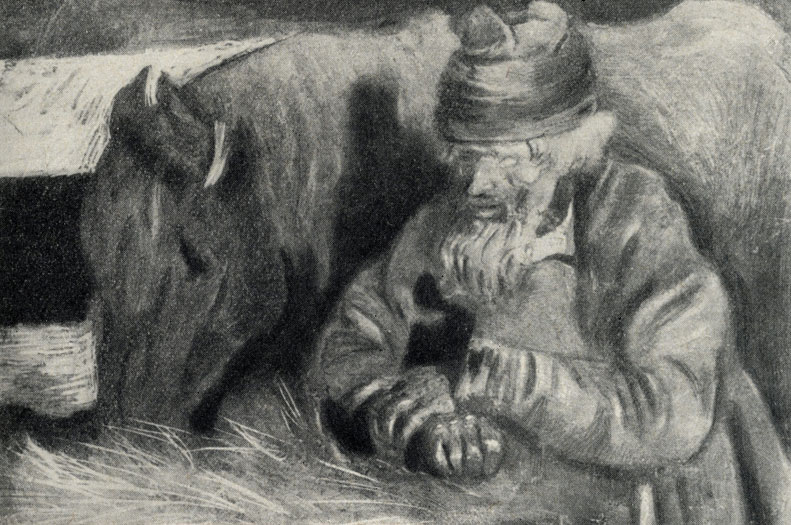

Sobre Tchekhov e as pequenas tragédias despercebidas
Muitos contos de Tchekhov, o mestre da prosa curta, são como fotografias da alma humana. Através de situações comuns, de personagens humanos (sem heróis nem vilões), podemos ver recortes de vidas e o mundo subjetivo de personagens os mais diversos. Em poucas páginas tem-se ali, cristalizada, uma sensação que dificilmente conseguiria ser descrita de outro modo. Costumo pensar neles como um catálogo (ou paleta-de-cores) das situações humanas.

Em “Angústia”, Tchekhov explora a solidão dos desprezados, a necessidade do Homem de ter uma palavra de compreensão, de poder contar uma tragédia pessoal e sentir um olhar de pena. Aos preguiçosos ou apressados, faço um resumo da história abaixo. Deixo entre aspas os trechos originais da tradução do Boris Schnaiderman.
Iona, um cocheiro pobre cujo filho morrera recentemente, não tinha “a quem confiar sua tristeza”. Acompanhamos Iona e seu cavalinho numa noite escura, próximos a uma praça, esperando passageiros.
Após muito tempo imóvel sob a neve, surge um militar solicitando uma viagem curta. Com o coração pesado, Iona tenta contar-lhe:
“- Pois é, meu senhor, assim é… perdi um filho esta semana…”
O passageiro não lhe dá atenção. Na rua as pessoas trombam na carruagem de Iona e o xingam; o militar pede para Iona ir mais rápido. Chegando ao destino, Iona fica novamente parado em sua boleia, esperando, vendo as horas passar sob a neve, imóvel…
Por fim, um grupo de bêbados (dentre eles um corcunda) sai de um bar e solicita uma viagem a Iona, pagando um valor muito abaixo do esperado. Ele aceita, pois é melhor do que nada. Os bêbados se xingam, brigam, caçoam do chapeu do cocheiro, dão-lhe tapas para ir mais rápido. Iona, em dado momento, tenta lhes contar:
“– Esta semana… assim, perdi meu filho!
– Todos vamos morrer. – suspira o corcunda, enxugando os lábios, após um acesso de tosse. – Bem, bate nele, bate nele! Minha gente, decididamente, não posso continuar andando assim! Esta corrida não acaba mais?
E Iona volta-se, para contar como lhe morreu o filho, mas, nesse momento, o corcunda solta um suspiro de alívio e declara que, graças a Deus, chegaram ao destino.
Iona está novamente só e, de novo, o silêncio desce sobre ele… A angústia que amainara por algum tempo torna a aparecer, inflando-lhe o peito com redobrada força. Os olhos de Iona correm, inquietos e sofredores, pela multidão que se agita de ambos os lados da rua: não haverá, entre esses milhares de pessoas, uma ao menos que possa ouvi-lo? Mas a multidão corre, sem reparar nele, nem na sua angústia… Uma angústia imensa, que não conhece fronteiras. Dá a impressão de que, se o peito de Iona estourasse e dele fluísse para fora aquela angústia, daria para inundar o mundo e, no entanto, não se pode vê-la. Conseguiu caber numa casca tão insignificante, que não se pode percebê-la mesmo de dia, com muita luz…”
Iona resolve ir para casa. Seu cavalinho trota ligeiro.
Uma hora e meia depois, numa casa que dividia com outros cocheiros, Iona está sentado ao lado do fogão sujo. Há gente roncando por todos os lados; o ar é abafado, sufocante… Um cocheiro acorda para beber água, Iona tenta puxar conversa mas o homem logo volta a dormir.
“É preciso contar como o filho adoeceu, como padeceu, o que disse antes de morrer e como morreu… É preciso descrever o enterro e a ida ao hospital, para buscar a roupa do defunto. Na aldeia, ficou a filha Aníssia… É preciso falar sobre ela também… De quantas coisas mais poderia falar agora? O ouvinte deve soltar exclamações, suspirar, lamentar… E é ainda melhor falar com mulheres. São umas bobas, mas desandam a chorar depois de duas palavras.”
Iona vai ao encontro de seu cavalinho no estábulo, e “pensa sobre a aveia, o feno, o tempo… Estando sozinho, não pode pensar no filho… Pode-se falar sobre ele com alguém, mas pensar nele sozinho, desenhar mentalmente sua imagem, dá um medo insuportável…
– Está mastigando? – pergunta Iona ao cavalo, vendo seus olhos brilhantes. – Ora, mastiga, mastiga… Se não ganhamos para a aveia, vamos comer feno… Sim… Já estou velho para trabalhar de cocheiro… O filho é que devia trabalhar, não eu… Era um cocheiro de verdade… Só faltou viver mais…
Iona permanece algum tempo em silêncio e prossegue:
– Assim é, irmão, minha egüinha… Não existe mais Kuzmá Iônitch… Foi-se para o outro mundo… Morreu assim, por nada… Agora, vamos dizer, você tem um potrinho, que é teu filho… E, de repente, vamos dizer, esse mesmo potrinho vai para o outro mundo… Dá pena, não é verdade?
O cavalinho vai mastigando, escuta e sopra na mão de seu amo… Iona anima-se e conta-lhe tudo…”
Tudo o que sabemos da história de Iona são fragmentos que ele tenta contar aos outros e alguns poucos pensamentos que ele tem.
Tchekhov não nos narra a doença do filho de Iona, as angústias do pai, as idas ao hospital, a notícia da morte, o enterro, o luto… sabemos apenas que essas coisas aconteceram e que Iona queria contá-las a alguém, queria que alguém o ouvisse como a um irmão. Vemos Iona e seu cavalinho sob a neve, esperando passageiros; vemos Iona tentando esvaziar o coração e sendo desprezado, sentimos a indeferença dos outros ante morte de seu filho, e o vemos seguindo solitário até chegar em casa… por fim, o único que o ouviu foi seu cavalo.
Iona até tenta fazer o cavalo entender melhor a situação (“Agora, vamos dizer, você tem um potrinho, que é teu filho… E, de repente, vamos dizer, esse mesmo potrinho vai para o outro mundo… Dá pena, não é verdade?”), e podemos imaginar a cena: um senhorzinho conversando com seu cavalo, no escuro, sob a neve, ao lado da casinha mal iluminada. Um homem sozinho no mundo, cujo único ouvinte sobre a tristeza que lhe devorava era o próprio instrumento de trabalho. O conto acaba ali: Iona em seu monólogo. Não sabemos o que acontece depois. Tchekhov larga a pena quando percebe que acabou seu retrato claro sobre a angústia humana, que passou despercebida por quem viu o cocheiro Iona naquela noite.